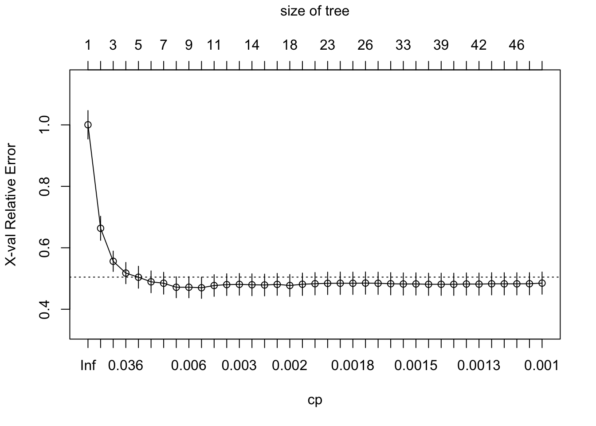
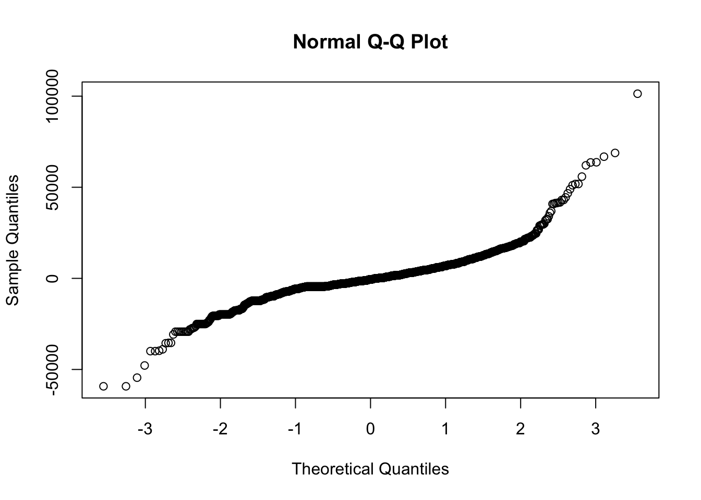
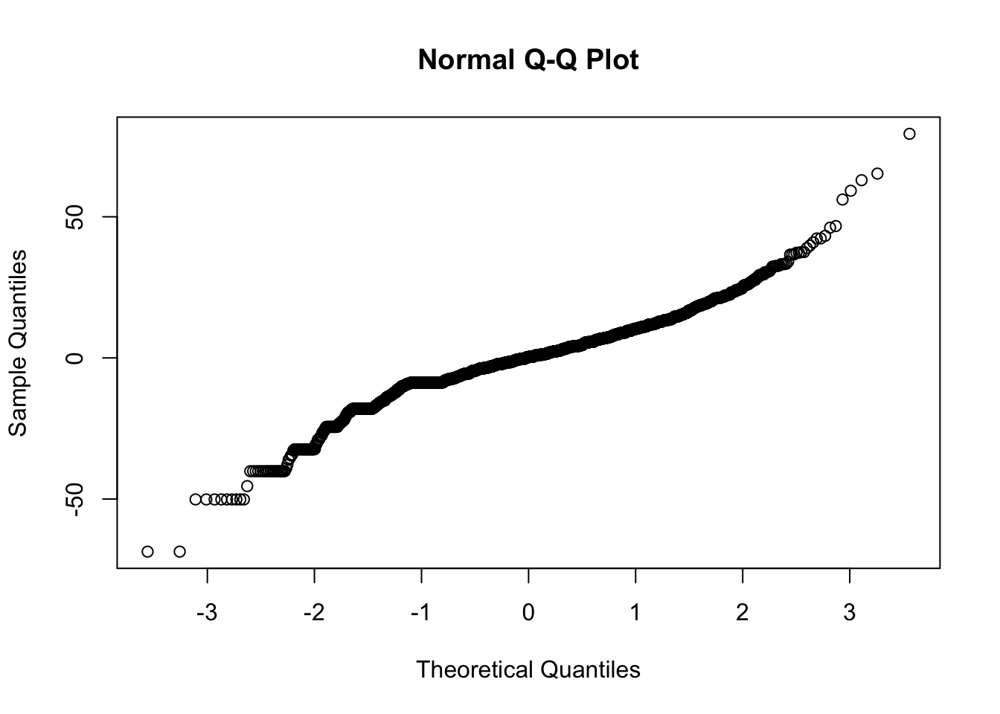

8 Answers to Selected Chapter 8 Exercises
Tree-based Classification and Regression
library(DAAG)
library(rpart)Exercise 1
Refer to the DAAG::headInjury data frame.
Use the default setting in
rpart()to obtain a tree-based model for predicting occurrence of clinically important brain injury, given the other variables.How many splits gives the minimum cross-validation error?
Prune the tree using the 1 standard error rule.
set.seed(29) ## Gives the results presented here
injury.rpart <- rpart(clinically.important.brain.injury ~ .,
data=headInjury, method="class", cp=0.0001)
plotcp(injury.rpart)
printcp(injury.rpart)
Classification tree:
rpart(formula = clinically.important.brain.injury ~ ., data = headInjury,
method = "class", cp = 1e-04)
Variables actually used in tree construction:
[1] age.65 amnesia.before basal.skull.fracture
[4] GCS.13 GCS.15.2hours high.risk
[7] loss.of.consciousness vomiting
Root node error: 250/3121 = 0.080103
n= 3121
CP nsplit rel error xerror xstd
1 0.0400 0 1.000 1.000 0.060660
2 0.0360 2 0.920 1.008 0.060881
3 0.0140 3 0.884 0.940 0.058965
4 0.0080 5 0.856 0.932 0.058734
5 0.0001 10 0.816 0.924 0.058502The setting cp=0.0001 was reached after some experimentation.
The minimum cross-validated relative error is for
nsplit=3, i.e., for a tree size of 4.The one-standard-error rule likewise chooses
nsplit=3, withcp=0.014. Settingcp=0.02, i.e., larger thancpfor the next smallest number of splits, will prune the tree back to this size. We have
injury0.rpart <- prune(injury.rpart, cp=0.02)We plot the tree from (a) that shows the cross-validated relative error, and the tree obtained from (c).
Plots are from the rpart analysis of the head injury data: (i) cross-validated relative error versus cp; and (ii) the tree obtained in (c).
There can be substantial change from one run to the next.
Exercise 2
The data set mifem is part of the larger data set in the data frame monica that we have included in our DAAG package. Use tree-based regression to predict mortality in this larger data set. What is the most immediately striking feature of your analysis? Should this be a surprise?
monica.rpart <- rpart(outcome ~ ., data=monica, method="class")plot(monica.rpart)
text(monica.rpart)Those who were not hospitalized were very likely to be dead! Check by examining the table:
table(monica$hosp, monica$outcome)
live dead
y 3522 920
n 3 1922Exercise 3
Note: The second sentence of the exercise in the published text is a mistake. There is no multiple regression example with this dataset in Chapter 3, or for that matter elsewhere in the text. What follows is a replacement for the existing exercise.
Use qqnorm() to check differences from normality in nsw74psid1::re78. What do you notice? Use tree-based regression to predict re78, and check differences from normality in the distribution of residuals.
What do you notice about the tails of the distribution?
Use the function
car::powerTransform()withfamily='bcnPower'to search for a transformation that will bring the distribution ofre78closer to normality. Run summary on the output to get values (suitably rounded values are usually preferred) oflambdaandgammathat you can then supply as arguments tocar::bcnPower()to obtain transformed valuestran78ofre78. Useqqnorm()with the transformed data to compare its distribution with a normal distribution. The distribution should now be much closer to normal, making the choice of splits that maximize the between-groups sum-of-squares sums of squares about the mean a more optimal procedure.Use tree-based regression to predict
tran78, and check differences from normality in the distribution of residuals. What do you now notice about the tails of the distribution? What are the variable importance ranks i) if the tree is chosen that gives the minimum cross-validated error; ii) if the tree is chosen following the one standard error criterion? In each case, calculate the cross-validated relative error.Do a random forest fit to the transformed data, and compare the bootstrap error with then cross-validated error from the
rpartfits.
In order to reproduce the same results as given here, do:
set.seed(41)Code is:
re78.rpart <- rpart(re78~., data=DAAG::nsw74psid1, cp=0.001)
plotcp(re78.rpart)
It is obvious that cp=0.0025 will be adequate. At this point, the following is a matter of convenience, to reduce the printed output:
re78.rpart2 <- prune(re78.rpart, cp=0.0025)
printcp(re78.rpart2)
Regression tree:
rpart(formula = re78 ~ ., data = DAAG::nsw74psid1, cp = 0.001)
Variables actually used in tree construction:
[1] age educ re74 re75
Root node error: 6.5346e+11/2675 = 244284318
n= 2675
CP nsplit rel error xerror xstd
1 0.3446296 0 1.00000 1.00035 0.046300
2 0.1100855 1 0.65537 0.66341 0.039166
3 0.0409403 2 0.54528 0.55609 0.033163
4 0.0317768 3 0.50434 0.51768 0.034633
5 0.0158188 4 0.47257 0.50415 0.035776
6 0.0105727 5 0.45675 0.48920 0.035591
7 0.0105337 6 0.44618 0.48465 0.035586
8 0.0063341 7 0.43564 0.47149 0.034168
9 0.0056603 8 0.42931 0.47158 0.034334
10 0.0038839 9 0.42365 0.46988 0.034652
11 0.0035516 10 0.41976 0.47717 0.035253
12 0.0031768 11 0.41621 0.48009 0.035351
13 0.0028300 12 0.41304 0.48099 0.035472
14 0.0027221 13 0.41021 0.47965 0.035585
15 0.0025000 15 0.40476 0.47885 0.035494To minimize the cross-validated relative error, prune back to 9 splits. Thus e.g., set cp=0.0038.
We could prune before comparing the distribution of residuals to that for a normal distribution. However, that would make little difference to the pattern that we now see. Interested readers may care to check.
res <- resid(re78.rpart2)
qqnorm(res)
The distribution of residuals is highly log-tailed, at both ends of the distribution. This makes the standard deviation an unsatisfactory measure of variation.
- The
car::bcnPowertransformation can be used for an initial transformation ofre78that provides a better starting point for the tree-based regression.
set.seed(41)
p2 <- car::powerTransform(nsw74psid1$re78, family='bcnPower')
summary(p2)bcnPower transformation to Normality
Estimated power, lambda
Est Power Rounded Pwr Wald Lwr Bnd Wald Upr Bnd
nsw74psid1$re78 0.3436 0.33 0.2848 0.4025
Estimated location, gamma
Est gamma Std Err. Wald Lower Bound Wald Upper Bound
nsw74psid1$re78 10604.01 708.1302 9216.072 11991.94
Likelihood ratio tests about transformation parameters
LRT df pval
LR test, lambda = (0) 89.16407 1 0
LR test, lambda = (1) 840.46368 1 0tran78 <- car::bcnPower(nsw74psid1$re78, lambda=0.33, gamma=8000)
tran78a.rpart <- rpart(tran78~., data=DAAG::nsw74psid1[,-10], cp=0.002)
printcp(tran78a.rpart)
Regression tree:
rpart(formula = tran78 ~ ., data = DAAG::nsw74psid1[, -10], cp = 0.002)
Variables actually used in tree construction:
[1] age educ re74 re75 trt
Root node error: 925054/2675 = 345.81
n= 2675
CP nsplit rel error xerror xstd
1 0.3920121 0 1.00000 1.00037 0.024990
2 0.0775515 1 0.60799 0.60884 0.021418
3 0.0426766 2 0.53044 0.54006 0.020860
4 0.0200850 3 0.48776 0.51036 0.021665
5 0.0135415 4 0.46767 0.48870 0.021479
6 0.0069401 5 0.45413 0.47877 0.021806
7 0.0064537 6 0.44719 0.47545 0.022075
8 0.0046938 7 0.44074 0.46694 0.021907
9 0.0042900 8 0.43605 0.46489 0.021950
10 0.0040279 9 0.43176 0.46791 0.022266
11 0.0035599 10 0.42773 0.46378 0.022205
12 0.0032532 11 0.42417 0.46330 0.022355
13 0.0032107 12 0.42091 0.46416 0.022667
14 0.0030128 13 0.41770 0.46360 0.022646
15 0.0025576 14 0.41469 0.46184 0.022609
16 0.0024921 16 0.40958 0.45664 0.022579
17 0.0024719 17 0.40708 0.45811 0.022680
18 0.0024622 18 0.40461 0.45811 0.022680
19 0.0024387 19 0.40215 0.45792 0.022685
20 0.0023563 20 0.39971 0.45792 0.022699
21 0.0021091 21 0.39735 0.45478 0.022676
22 0.0020508 22 0.39525 0.45630 0.022656
23 0.0020102 23 0.39319 0.45630 0.022656
24 0.0020000 24 0.39118 0.45546 0.022646The minimum cross-validated relative error is at nsplit=21. The one standard error limit is 0.477 (=0.45478 +0.022676, round to 3 d.p.). The one standard error rule suggests taking nsplit=6.
tran78se.rpart <- prune(tran78a.rpart, cp=0.0065) ## 1 SE rule
tran78.rpart <- prune(tran78a.rpart, cp=0.0021) ## Min xval rel error
res <- resid(tran78se.rpart)
qqnorm(res)
The long tails have now gone.
Note that the root node error is given as 192.99. The cross-validated errors for the two trees are, rounded to one decimal place:
- One SE rule:
round(192.99*.46697,1) = 90.1 - Minimum cross-validated error:
round(192.99*0.45739,1) = 88.3
library(randomForest)randomForest 4.7-1.1Type rfNews() to see new features/changes/bug fixes.tran78.rf <- randomForest(y=tran78, x=DAAG::nsw74psid1[,-10])
tran78.rf
Call:
randomForest(x = DAAG::nsw74psid1[, -10], y = tran78)
Type of random forest: regression
Number of trees: 500
No. of variables tried at each split: 3
Mean of squared residuals: 140.2498
% Var explained: 59.44The mean of the squared residuals is given as 140.2498427. This is substantially larger than either of the cross-validated errors that are given above from the tree created using rpart(). With only a small number of variables used in tree construction, ::: {.colbox data-latex=““} ::: {data-latex=”“} Exercise 4 ::: The complete email spam dataset is available from https://archive.ics.uci.edu/dataset/94/spambase or from the bayesreg package. Carry out a tree-based regression using all 57 available explanatory variables. Determine the change in the cross-validation estimate of predictive accuracy. ::: We set the random number seed to 21, to allow users to reproduce our results. In most other contexts, it will be best not to set a seed.
data('spambase', package='bayesreg')
## For ease of labeling output, specify short names.
## Use the following, or do, e.g., nam <- c(paste0('v',1:57), 'yesno')
nam <- c("make", "address", "all", "threeD", "our", "over", "remove",
"internet", "order", "mail", "receive", "will", "people", "report",
"addresses", "free", "business", "email", "you", "credit", "your",
"font", "n000", "money", "hp", "hpl", "george", "n650", "lab",
"labs", "telnet", "n857", "data", "n415", "n85", "technology",
"n1999", "parts", "pm", "direct", "cs", "meeting", "original",
"project", "re", "edu", "table", "conference", "semicolon", "leftparen",
"leftbrack", "bang", "dollar", "hash", "crl.av", "crl.long",
"crl.tot", "yesno")
names(spambase) <- namNow load rpart and proceed with the calculations.
set.seed(21)
spam.rpart <- rpart(yesno~., data=spambase, cp=0.0001, method="class")
printcp(spam.rpart)
Classification tree:
rpart(formula = yesno ~ ., data = spambase, method = "class",
cp = 1e-04)
Variables actually used in tree construction:
[1] address addresses all bang business conference
[7] credit crl.av crl.long crl.tot cs direct
[13] dollar edu email font free george
[19] hash hp hpl internet lab labs
[25] leftbrack leftparen mail make money n1999
[31] n415 n650 n857 order original over
[37] parts people pm receive remove report
[43] table threeD will you your
Root node error: 4486/4601 = 0.97501
n= 4601
CP nsplit rel error xerror xstd
1 0.00587011 0 1.00000 1.00000 0.0023604
2 0.00222916 3 0.98239 0.98373 0.0029934
3 0.00217343 4 0.98016 0.98417 0.0029781
4 0.00200624 9 0.96879 0.98417 0.0029781
5 0.00156041 11 0.96478 0.97994 0.0031198
6 0.00133749 15 0.95854 0.97303 0.0033355
7 0.00118888 16 0.95720 0.96991 0.0034275
8 0.00111458 20 0.95230 0.96634 0.0035290
9 0.00104027 29 0.94226 0.96589 0.0035414
10 0.00100312 32 0.93914 0.96567 0.0035476
11 0.00094739 34 0.93714 0.96322 0.0036148
12 0.00089166 38 0.93335 0.96099 0.0036745
13 0.00085451 42 0.92978 0.96010 0.0036981
14 0.00080250 48 0.92465 0.95854 0.0037388
15 0.00078021 53 0.92064 0.95698 0.0037789
16 0.00075791 55 0.91908 0.95586 0.0038073
17 0.00074305 69 0.90816 0.95586 0.0038073
18 0.00066875 85 0.89523 0.95074 0.0039341
19 0.00059444 110 0.87829 0.94739 0.0040139
20 0.00057958 114 0.87584 0.94516 0.0040658
21 0.00055729 119 0.87294 0.94583 0.0040504
22 0.00052014 127 0.86848 0.94583 0.0040504
23 0.00044583 130 0.86692 0.93914 0.0042017
24 0.00039010 193 0.83794 0.93981 0.0041869
25 0.00037153 197 0.83638 0.93981 0.0041869
26 0.00035667 209 0.83148 0.93981 0.0041869
27 0.00033437 214 0.82969 0.93981 0.0041869
28 0.00027864 218 0.82835 0.93959 0.0041919
29 0.00022292 226 0.82613 0.93959 0.0041919
30 0.00011146 241 0.82278 0.93781 0.0042311
31 0.00010000 243 0.82256 0.93803 0.0042262Figure @ref(spam) shows the plot of cross-validated relative error versus cp, for the full spam data set. For making a decision on the size of tree however, it is convenient to work from the information given by the function printcp().
plotcp(spam.rpart)Setting cp=0.0001 ensures, when the random number seed is set to 21, that the cross-validated relative error reaches a minimum, of 0.1958, at nsplit=43. Pruning to get the tree that is likely to have best predictive power can use cp=0.001. Adding the SE to the minimum cross-validated relative error gives 0.2. The smallest tree with an SE smaller than this is at nsplit=36; setting cp=0.0012 will give this tree.
Here then are the two prunings:
spam.rpart1 <- prune(spam.rpart, cp=0.001) # Minimum predicted error
spam.rpart2 <- prune(spam.rpart, cp=0.0012) # 1 SE pruning